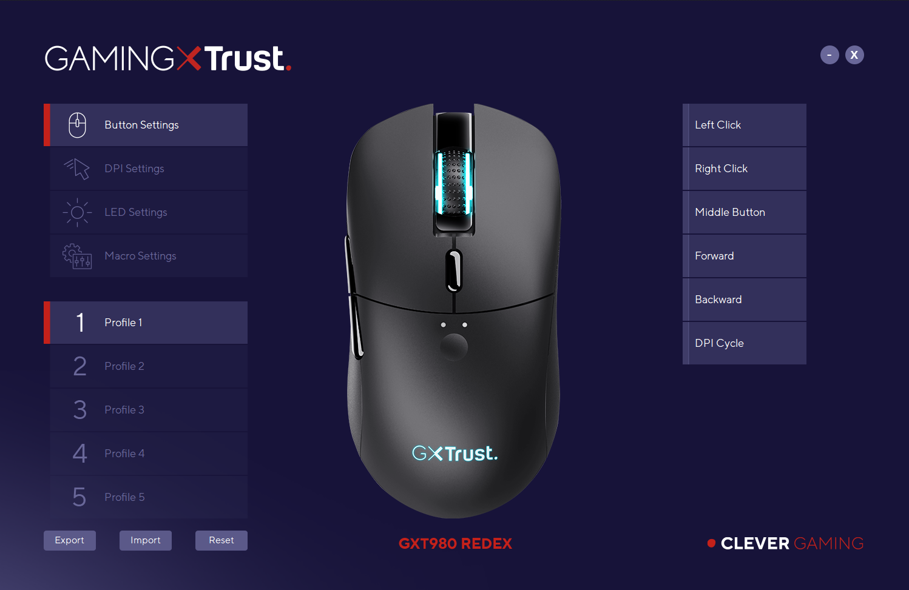
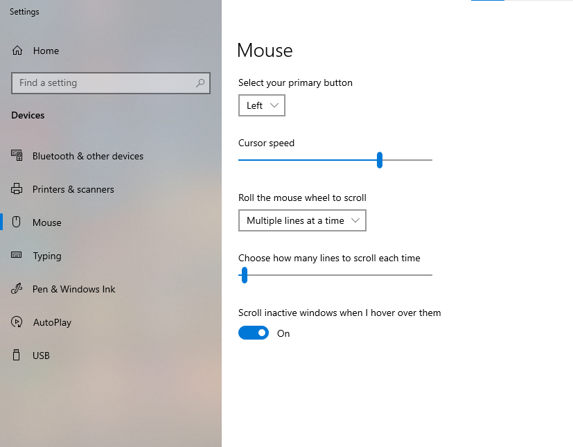
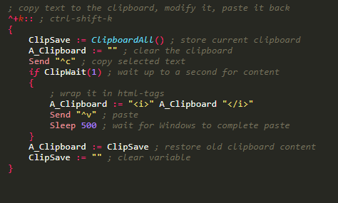
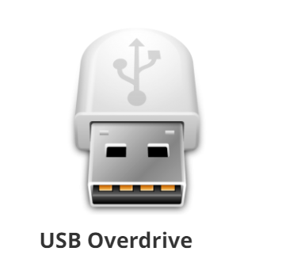
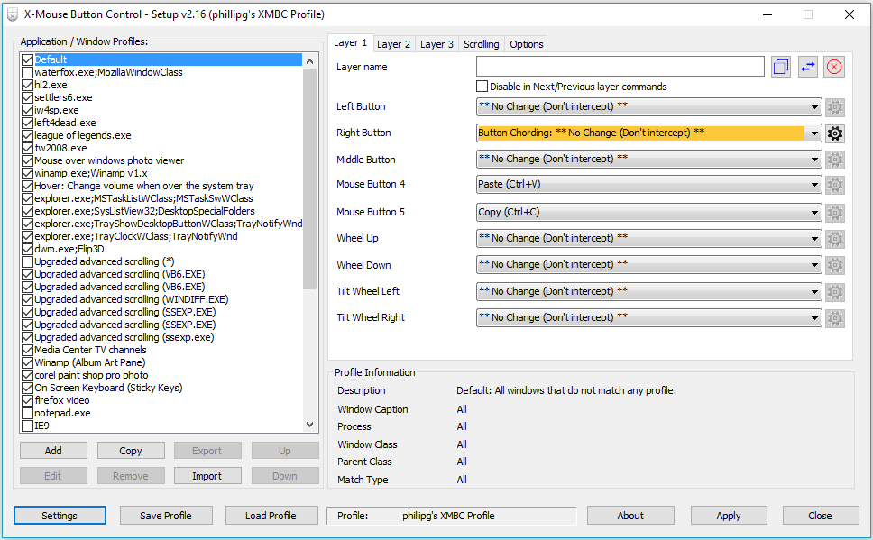
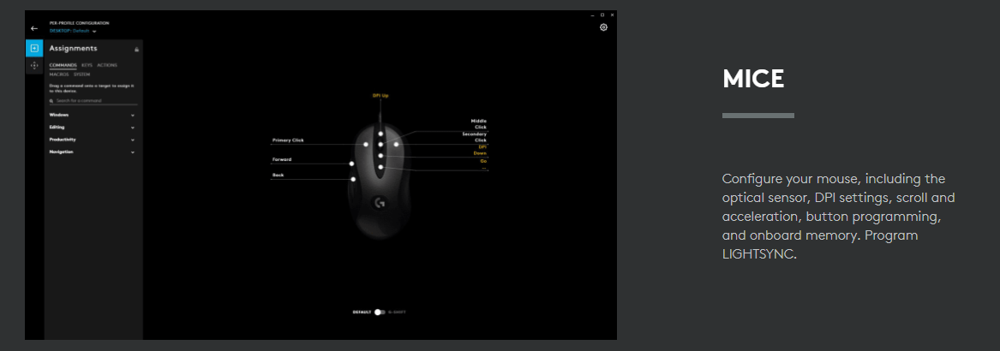

In the realm of productivity and efficiency, customization is key. One often overlooked but highly valuable aspect of customization is the ability to configure your mouse buttons to perform specific functions. Many modern mice come equipped with extra buttons that can be programmed to streamline tasks and enhance your overall computing experience. In this post, we will explore six techniques for customizing mouse buttons to provide quick access to functions, saving you time and effort.
Table of Content
1. Manufacturer Software
Trusted Reviews, CC BY-NC-ND 4.0
The majority of mice manufacturers provide dedicated software that allows users to customize their mouse buttons. Logitech, Razer, Corsair, and other major brands offer intuitive applications that enable you to assign various functions to different buttons. These programs often provide a user-friendly interface where you can easily map commands, macros, or even specific application launches to your mouse buttons.
2. Operating System Settings
If you prefer to avoid third-party software, most operating systems offer built-in settings to customize mouse buttons. For example, on Windows, you can navigate to the "Mouse" settings in the Control Panel to assign functions to different buttons. On macOS, the "Accessibility" settings allow you to configure mouse button actions. This approach is straightforward and ensures compatibility across various devices.
3. AutoHotKey (Windows)
For advanced users seeking a high level of customization, AutoHotKey is a powerful scripting language for Windows that allows you to create custom scripts to automate tasks and remap mouse buttons. This tool provides unparalleled flexibility, enabling you to create intricate scripts that respond to specific applications or system-wide actions.
4. USB Overdrive (Mac)
Mac users can benefit from USB Overdrive, a third-party application that offers extensive customization options for mice. USB Overdrive allows you to configure buttons, adjust sensitivity, and create custom profiles for different applications. This tool is particularly useful for users who want fine-tuned control over their mouse's behavior on a Mac.
5. X-Mouse Button Control (Windows)
X-Mouse Button Control is a lightweight and user-friendly application specifically designed for Windows users. This tool allows you to remap mouse buttons and assign them to perform various functions. X-Mouse Button Control also supports application-specific settings, making it a versatile choice for users who want different button configurations for different programs.
6. Gaming Mouse Software
Many gaming mice come with sophisticated customization options designed to enhance gaming experiences. However, these features can be leveraged for general productivity as well. Gaming mouse software from companies like SteelSeries, Roccat, and others allows users to assign functions, macros, and even complex combinations of actions to their mouse buttons.
Conclusion
Customizing mouse buttons for quick access to functions is a practical and efficient way to boost your productivity. Whether you're a casual user looking to streamline daily tasks or a power user seeking advanced scripting capabilities, there are various tools and methods available to suit your needs. Experiment with these techniques to find the configuration that works best for you, and enjoy a more personalized and efficient computing experience.